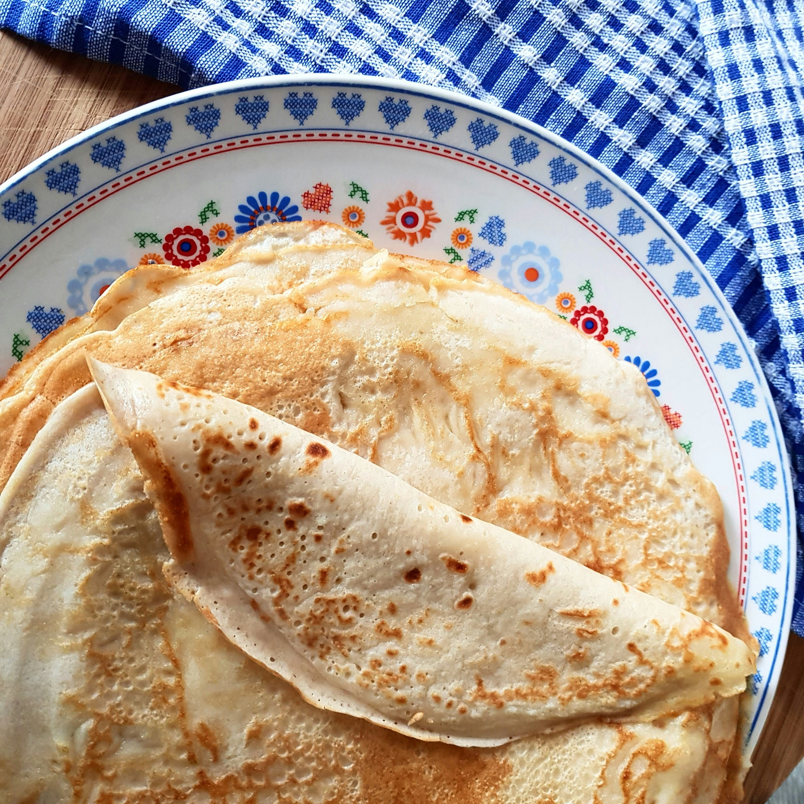

Gluten-free Pannekoeke

Description: South African style pancakes rolled and filled with cinnamon sugar
Ingredients
Pannekoeke Batter
- 2 large eggs
- 1 tsp vanilla extract
- 500ml milk
- 125ml water
- 120 grams gluten free all purpose flour
- 2 tsp baking powder
- 1/4 tsp salt
- 3 tbsp melted butter
- 1 tbsp sugar
Cinnamon Sugar:
- 60g brown sugar
- 1 tbsp cinnamon
Instructions
- Mix together the cinnamon and suagr and set aside
- Whisk together the eggs, vanilla extract in a medium sized bowl.
- Add the milk and water, and whisk until well combined.
- In a seprate bowl, mix the flour, baking powder and salt together.
- Gradually add the wet mixture to the dry mixture and whisk until well combined
- Whisk in the melted butter and let the batter rest for 15 minutes
- Add a little bit of oil to a large large nonstick frying pan and bring the pan to a medium-high heat
- Scoop about 1/3 of batter into the pan, swirling to ensure it covers the whole pan.
- Cook until the batter until the edges begin to pull away from the pan, flip and cook for another few seconds
- Transfer the pancake to a plate and sprinkle with some cinnamon sugar before rolling and settig aside
Home